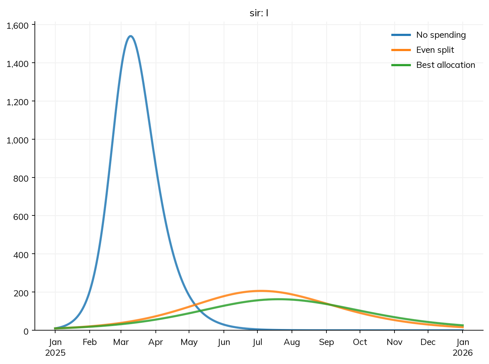
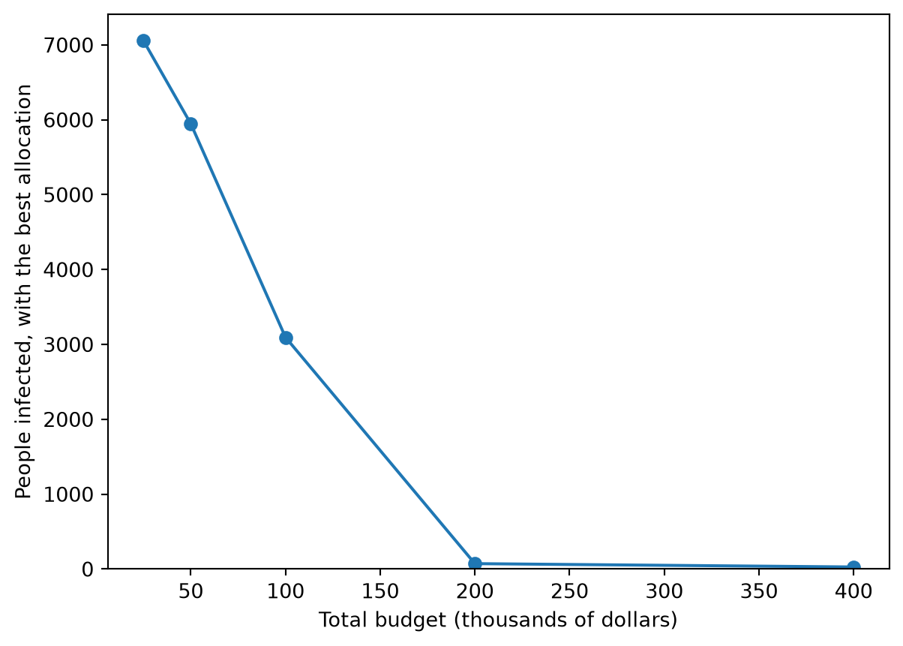

import numpy as np
import starsim as ss
S, I, R = ss.states('S I R')
tests = ss.par(50e3, name='tests') # Spending on testing, in dollars
nets = ss.par(50e3, name='nets') # Spending on bed nets
N = (S + I + R).total
reach = lambda spend, cost: 1 - np.exp(-spend/cost/N) # The share of people reached, at a cost per person
beta = ss.perday(0.2)*(1 - 0.6*reach(tests, 10))*(1 - 0.3*reach(nets, 5))
sir = ss.Disease(S >> I @ beta*I.frac, I >> R @ ss.days(10), init_prev=0.001, name='sir')
sim = ss.Sim(sir, total_pop=10_000, start=2025, stop=2026, verbose=0) # One year, in daily stepsOptimization
Calibration asks which values of a model’s parameters fit the data. Optimization asks a different question of a calibrated model: given a budget, how should it be divided between programs to do the most good? If testing, bed nets, and vaccination each reduce transmission, with diminishing returns as each reaches more people, there is an allocation of a fixed total between them that averts the most infections, and it is rarely all to the program that looks best on its own. ss.fit.optimize() finds it, using the same machinery as fitting: the spending on each program is a parameter of the model, and the search runs the model at each allocation it tries.
This page covers how spending is put into a model, the search itself, limits on each program, a different total, the least total that reaches a target, and reading the result. Where costs come from, and how to count what interventions cost, is in Costs; fitting the model first is in Fitting a model.
Spending as parameters
ss.fit.optimize() needs the spending on each program as a named parameter of the model (ss.par), and the model has to say what the spending buys: here, how the share of people a program reaches depends on what is spent on it, and how much that reduces transmission. In this SIR model of an infection with R0 = 2, two programs reduce transmission, each with diminishing returns: the share of people reached rises as 1 − exp(−spend / (cost per person × population)), so the first dollars reach many people and later ones fewer. Testing (and isolating those who test positive) costs $10 a person and, at full reach, cuts transmission by 60%; bed nets cost $5 a person and cut it by 30%. The current budget is $100,000, split evenly:
ss.par(..., name=) gives each parameter the name it is found by. Since the spending is in the rates of the model, a change in it is a change in the model like any other: sim.new(pars=dict(tests=100e3, nets=0)) is the sim with everything spent on testing. Before optimizing, it helps to see the range of outcomes. sir.R at the end of the run is the number of people ever infected:
allocations = {
'No spending': dict(tests=0, nets=0),
'All testing': dict(tests=100e3, nets=0),
'All bed nets': dict(tests=0, nets=100e3),
'Even split': dict(tests=50e3, nets=50e3),
}
for label, spend in allocations.items():
run = sim.new(pars=spend).run()
print(label, round(run.results.sir.R[-1]))No spending 7972
All testing 3575
All bed nets 5715
Even split 3533Testing does more for the money than bed nets, but its returns diminish, so the even split does better than either alone.
Finding the best allocation
ss.fit.optimize() keeps the total fixed (by default, the total of the current values, $100,000 here) and searches over its division between the programs, with minimize= the result to make as small as possible (or maximize= one to make as large as possible):
best = ss.fit.optimize(sim, spend=['tests', 'nets'], minimize='sir.R')
best.summarize()Optimized sir.R: 3,533.42 to 3,094.7, in 15 runs (0.1 s)
sir.R: 3,533.42 before, 3,094.7 after (15 runs)| before | after | |
|---|---|---|
| tests | 50000.0 | 75231.627116 |
| nets | 50000.0 | 24768.372884 |
The best allocation puts about three quarters on testing and a quarter on bed nets, which brings the infections down from about 3,530 with the even split to about 3,090: some 440 infections averted for the same money. The best allocation’s run is best.sim, which can be compared with the others:
compare = ss.MultiSim([
sim.new(pars=allocations['No spending'], label='No spending').run(),
sim.new(pars=allocations['Even split'], label='Even split').run(),
best.sim.new(label='Best allocation').run(),
])
compare.plot('sir.I')
How it works: the search (SciPy’s SLSQP) is over the shares of the total, which sum to 1, and each point it tries is a run of the model; a model that is nothing but compartments is restarted for each run rather than built again, so each run takes milliseconds. The search is local, and assumes that the result changes smoothly with the spending, so:
- Use a deterministic model. With a stochastic model, each run of the same allocation gives a different answer, and the search can’t tell a better allocation from a lucky run. Optimize the ODE form of the model (
solver='ode'), or give a function of the sim that averages many runs. - Make returns diminish. If every program’s effect grows in proportion to its spending, the best allocation is to put everything into the program with the best ratio; the answer is then obvious, and the search adds nothing. Real programs saturate, and the model should say how.
- Check that the answer is not one of several. With more than a few programs, the search can stop at an allocation that is better than those near it but not the best; starting from another allocation (other values of the spending parameters) and comparing is a quick check.
What to optimize, and when
minimize= and maximize= take the name of a result, as a disease’s ('sir.R', or 'R' for the first disease), whose value at the end of the run is used, or at the time given by at= (a date, or a year). For anything else, they take a function of the run sim, which returns the number to make small or large: here, the height of the peak, for a health system that must not be overwhelmed:
def peak_infectious(sim):
""" The most people infectious at once """
return sim.results.sir.I.max()
peak = ss.fit.optimize(sim, spend=['tests', 'nets'], minimize=peak_infectious, verbose=False)
peak.summarize()peak_infectious: 206.143 before, 162.629 after (12 runs)| before | after | |
|---|---|---|
| tests | 50000.0 | 75238.387797 |
| nets | 50000.0 | 24761.612203 |
The best allocation for the peak is much the same as for the total here, but need not be: a program that delays infections helps the peak more than the total.
start= says when the new allocation takes effect: before it, each program keeps its current spending, and from then on, the allocation being tried. This is the usual question for a program that is already running: given what has been spent until now, how should next year’s budget be divided?
from_april = ss.fit.optimize(sim, spend=['tests', 'nets'], minimize='sir.R', start='2025-04-01', verbose=False)
from_april.summarize()sir.R: 3,533.42 before, 3,171.01 after (17 runs)| before | after | |
|---|---|---|
| tests | 50000.0 | 75232.348272 |
| nets | 50000.0 | 24767.651728 |
The best allocation from April is the same, but it averts fewer infections (about 360 rather than 440) than the same change from the start, since the first three months have already happened at the even split.
Limits on each program
Programs can rarely be cut to nothing or grown without limit: a program may have contracts to honor, or be unable to expand faster than it can hire staff. bounds= gives the least and most each program can have, in dollars, by name, with None for no limit (a program not named has none beyond 0 and the total):
limited = ss.fit.optimize(sim, spend=['tests', 'nets'], minimize='sir.R', bounds=dict(tests=(None, 60e3)), verbose=False)
limited.summarize()sir.R: 3,533.42 before, 3,264.95 after (8 runs)| before | after | |
|---|---|---|
| tests | 50000.0 | 60000.0 |
| nets | 50000.0 | 40000.0 |
With testing capped at $60,000, the rest goes to bed nets, and the result is between the even split and the unconstrained best. A single pair, bounds=(10e3, None), applies to every program.
A different total
total= sets the total to divide, for the question “what if the budget were larger (or smaller)?”; the search starts from the current shares of the spending, scaled to the total. Here, the best allocation of twice the budget:
double = ss.fit.optimize(sim, spend=['tests', 'nets'], minimize='sir.R', total=200e3, verbose=False)
double.summarize()sir.R: 3,533.42 before, 71.7292 after (21 runs)| before | after | |
|---|---|---|
| tests | 50000.0 | 146676.123347 |
| nets | 50000.0 | 53323.876653 |
For a curve of the best result against the budget (the “production function” of the programs together), run it at a range of totals:
import matplotlib.pyplot as plt
totals = [25e3, 50e3, 100e3, 200e3, 400e3]
infections = []
for total in totals:
opt = ss.fit.optimize(sim, spend=['tests', 'nets'], minimize='sir.R', total=total, verbose=False)
infections.append(opt.value)
plt.plot(np.array(totals)/1e3, infections, 'o-')
plt.xlabel('Total budget (thousands of dollars)')
plt.ylabel('People infected, with the best allocation')
plt.ylim(bottom=0);
Each further dollar averts fewer infections until, past a certain budget, transmission is pushed below the threshold (R below 1), and the curve flattens out near the initial infections.
The least total that reaches a target
The reverse question, how much money is needed to reach a target, is answered with target=: the least total whose best allocation brings the result to the target (at most the target with minimize=, at least with maximize=). The search doubles the total until it reaches the target, then halves the gap between a total that does and one that doesn’t, to within 1%:
needed = ss.fit.optimize(sim, spend=['tests', 'nets'], minimize='sir.R', target=1000, verbose=False)
needed.summarize()sir.R: 3,533.42 before, 968.425 after (78 runs)
The least total that reaches 1,000: 128,906 (from 100,000)| before | after | |
|---|---|---|
| tests | 50000.0 | 96170.325633 |
| nets | 50000.0 | 32735.924367 |
This assumes that more money never does worse, which is true of any sensible model of spending. A target that no budget can reach (fewer infections than the initial ones, say) is an error.
Reading the result
ss.fit.optimize() returns an ss.fit.Optimization, which holds:
| Attribute | What it is |
|---|---|
alloc |
The best allocation, by program |
value |
The result with it |
total |
Its total (with target=, the least total that reaches the target) |
alloc_before, value_before |
The current allocation, and the result with it |
sim |
The sim run with the best allocation |
n_runs |
The number of runs the search took |
converged, why |
Whether the search reached its own stopping rule, and its message |
best.alloc{'tests': 75231.62711574533, 'nets': 24768.37288425468}If the search ends at an allocation worse than the one it started from, the starting allocation is returned. By default (verbose=True, unless ss.options.verbose says otherwise) it prints a line at the end, as in the first example, and with target=, each total it tried.
Program books from Atomica
An optimization in Atomica starts from a program book: a spreadsheet of programs, their costs, and the coverage and effects they buy. A model imported from Atomica with its program book (see Conversion: Atomica) has a spending parameter for each program, so spend= is not needed, and the same calls work:
sim = ss.import_from('hiv_framework.xlsx', format='atomica', databook='hiv_databook.xlsx', progbook='hiv_progbook.xlsx', programs_start=2020)
best = ss.fit.optimize(sim, start=2020, maximize='all_vs', at=2030)
least = ss.fit.optimize(sim, start=2020, maximize='all_vs', at=2030, target=1.1*best.value) # The least money that reaches 10% morePitfalls
- Spending that changes nothing. A spending parameter that doesn’t appear in any rate leaves the result unchanged, and the search returns the starting allocation; check with a few allocations by hand first, as above.
- Optimizing a stochastic run. The search compares runs, so chance differences between them become apparent differences between allocations. Use the ODE, or average many runs in a function given as
minimize=. - An optimum that is an artifact of the model of costs. The answer is only as good as the curves that say what spending buys; a different saturation (or none) can move the best allocation a long way. Try the plausible range of costs and effects, as for any other uncertain parameter.
- A model that wasn’t calibrated. An allocation optimized on an uncalibrated model optimizes the wrong epidemic; fit it first (see Fitting a model).
Further reading
- Optima HIV: allocative efficiency studies of HIV programs, the approach
ss.fit.optimize()takes - Atomica documentation: program books and optimizations in the framework Starsim imports from
- SciPy: Constrained minimization (SLSQP): the search used here